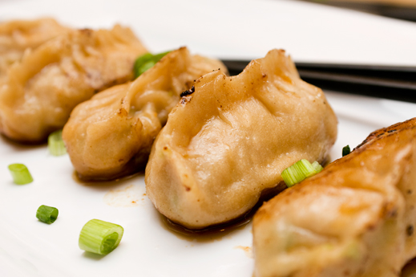

Ingredients:
- 3 cups Plain Flour
- 300g Lean Pork Mince
- 300g Chinese Cabbage (preferably young)
- 5 Dried Chinese Mushrooms
- 2 eggs
- Olive Oil
- Ginger
- Salt
- Sugar
- Soy Sauce
- Sesame oil
- ⅔ cup Water (at room temperature)
- Chinese brown Vinegar (to serve)
- Spring onions (to serve)
Method:
Preparation:
- Wash and soak Chinese Mushrooms in warm water for 1 hour, or until completely soaked and softened.
Dough:
- Combine Water and flour in a large mixing bowl, and knead until even and reasonably elastic (it should regain its shape when you lightly press a finger into it). Set aside for an hour, the mixing bowl covered with a damp cloth.
Pork Filling:
- Beat the whole eggs and fry in oil to make an omelette. Cut it into fine pieces (a 'mince')
- Chop the Chinese Cabbage Finely (into 2-3mm cubes). Then do the same for the mushrooms.
- Chop a piece of ginger (the size of thumb) into small pieces.
- Add the eggs, cabbage, mushrooms and ginger to the mince. Mix the mince until evenly mixed. Then add ½ teaspoon of salt, 2 teaspoons of sugar, 3 tablespoons of soy sauce, 2 tablespoons of olive oil, and 1 tablespoon of sesame oil to the mixture. Mix Well.
Assembly:
- Divide the dough into 3 roughly equal parts. Roll each part into long rolls, about 2-3 cm in diameter. Cut the rolls into 2-3cm pieces.
- To make the dumpling, roll a piece of dough into a small ball. Then flatten it with your palm. Using a dough roller, roll each piece into thin disks, about the size of your palm. They should be thinner around the edges than in the centre.
- Put about a teaspoon's amount of mince in the centre of the disk, and fold the two sides of the dumpling together. Then, squeeze firmly to seal the dumpling, working your way down the two sides of the top. Ensure there are no gaps.
- Repeat the previous two steps until either the dough or the mince runs out.
To cook:
- Put 1 tablespoon olive oil a pan, ensuring the bottom is covered, and place dumplings in a pan, ensuring they do not touch. Cook on medium-high heat. Add water to the pan, so that it covers ⅓ of the dumpling height. Use a lid to cover the frying pan. When the water boils, continue to cook for another 10 minutes. Then open the lid. When all the water dries, continue to cook for 1½ minutes or until the bottom of the dumpling is crispy and golden brown.
- Serve with chinese brown vinegar and chopped spring onions. Chopsticks recommended.